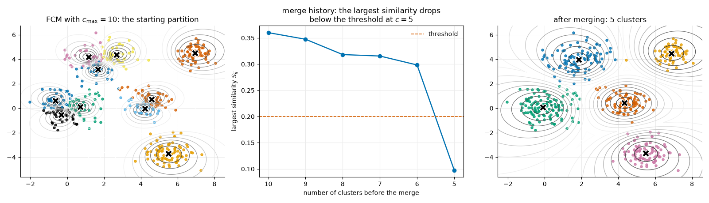
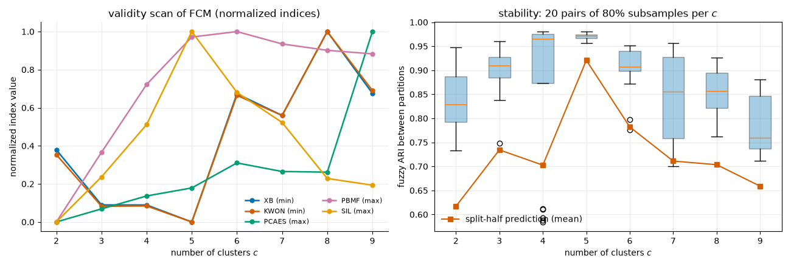
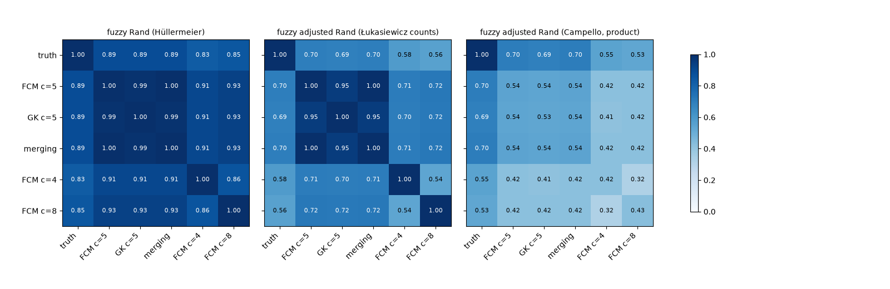
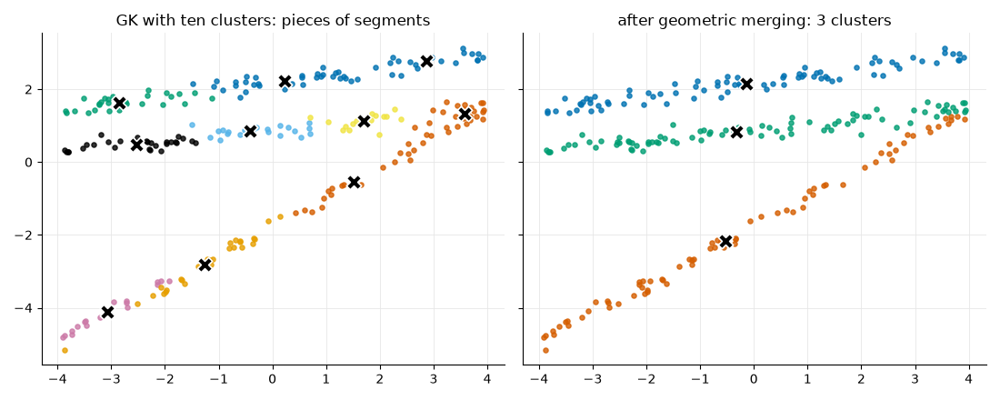
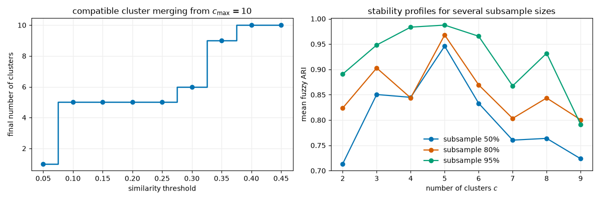

Note
Go to the end to download the full example code or to run this example in your browser via Binder.
Three routes to the number of clusters: merging, validity scan, and stability#
The number of clusters can be chosen in three conceptually different ways.
Validity scan. Fit the algorithm for every candidate \(c\) and pick the optimum of an index of compactness and separation.
Compatible cluster merging. Start with a deliberately large number of clusters and merge pairs of clusters that describe the same structure, refitting after every merge, until no compatible pair remains.
Stability selection. Cluster random subsets of the data and find the \(c\) for which the partitions agree: a number that reflects structure is reproducible, whereas a wrong one splits or merges groups arbitrarily.
The third route needs a way to compare two fuzzy partitions, which the fuzzy Rand and adjusted Rand indices provide. This example runs all three routes on the same data and uses the fuzzy indices to compare the results.
Five groups of different size and spread#
import matplotlib.pyplot as plt
import numpy as np
from fuzzyclust._utils import labels_to_membership
from fuzzyclust.cluster import FCM, GK, CompatibleClusterMerging, cluster_similarity, reference_fuzziness
from fuzzyclust.datasets import make_lines
from fuzzyclust.plotting import PALETTE, plot_clusters, plot_membership_contours, plot_validity_scan
from fuzzyclust.validity import (
fuzzy_adjusted_rand_index,
fuzzy_rand_index,
scan_n_clusters,
stability_selection,
suggest_n_clusters,
)
rng = np.random.RandomState(0)
group_centers = np.array([[0.0, 0.0], [4.5, 0.5], [2.0, 4.0], [7.0, 4.5], [5.5, -3.5]])
sizes = [120, 80, 100, 60, 90]
spreads = [0.8, 0.6, 0.9, 0.5, 0.7]
X = np.vstack([c + s * rng.randn(n, 2) for c, n, s in zip(group_centers, sizes, spreads, strict=True)])
y = np.repeat(np.arange(5), sizes)
Route 1: compatible cluster merging#
FCM is started with ten clusters. Two FCM clusters that share one group have strongly overlapping membership functions; their similarity as fuzzy sets, \(S_{ij}=\sum_k\min(\mu_{ik},\mu_{jk})/\sum_k\max(\mu_{ik},\mu_{jk})\), is about 0.3 to 0.35, whereas clusters on different groups stay well below 0.2. The most similar pair is merged, FCM is refitted from the merged partition, and the procedure stops when no pair exceeds the threshold.
# [snippet:merging]
ccm = CompatibleClusterMerging(FCM(random_state=0), start_n_clusters=10, criterion="similarity",
similarity_threshold=0.2).fit(X)
for step in ccm.merge_history_:
print(f"c = {step['n_clusters']:2d}: merge clusters {step['pair']} (similarity {step['compatibility']:.2f})")
print(f"final number of clusters: {ccm.n_clusters_}")
# [/snippet:merging]
start = FCM(n_clusters=10, random_state=0).fit(X)
fig, axes = plt.subplots(1, 3, figsize=(16, 4.6))
plot_membership_contours(start, X, ax=axes[0], labels=False)
axes[0].set_title("FCM with $c_{\\max}=10$: the starting partition")
steps = [h["n_clusters"] for h in ccm.merge_history_]
sims = [h["compatibility"] for h in ccm.merge_history_]
S_final = cluster_similarity(reference_fuzziness(ccm.membership_, ccm.estimator_.m))
np.fill_diagonal(S_final, 0.0)
final_sim = S_final.max() # largest similarity left: below the threshold
axes[1].plot(steps + [ccm.n_clusters_], sims + [final_sim], marker="o", color=PALETTE[0], lw=1.8)
axes[1].axhline(0.2, color=PALETTE[1], ls="--", lw=1.2, label="threshold")
axes[1].invert_xaxis()
axes[1].set_xlabel("number of clusters before the merge")
axes[1].set_ylabel("largest similarity $S_{ij}$")
axes[1].set_title("merge history: the largest similarity drops\nbelow the threshold at $c=5$")
axes[1].legend(frameon=False)
axes[1].grid(True, color="0.92")
plot_membership_contours(ccm.estimator_, X, ax=axes[2], labels=False)
axes[2].set_title(f"after merging: {ccm.n_clusters_} clusters")
plt.tight_layout()

c = 10: merge clusters (1, 5) (similarity 0.36)
c = 9: merge clusters (0, 3) (similarity 0.35)
c = 8: merge clusters (5, 6) (similarity 0.32)
c = 7: merge clusters (2, 5) (similarity 0.32)
c = 6: merge clusters (0, 4) (similarity 0.30)
final number of clusters: 5
Routes 2 and 3: validity scan and stability selection#
The scan evaluates indices of compactness and separation, among them the Kwon index (Xie–Beni with a penalty on the spread of the prototypes) and the PCAES index of Wu and Yang. Stability selection either clusters pairs of 80% subsamples (Ben-Hur et al.) or fits one half of the data and predicts the other (Lange et al.), and it compares the partitions with the fuzzy adjusted Rand index; the distribution over 20 repetitions is shown for every \(c\).
# [snippet:scan_stability]
table = scan_n_clusters(FCM(random_state=0, n_init=3), X, range(2, 10),
indices=["XB", "KWON", "PCAES", "PBMF", "SIL"])
print(suggest_n_clusters(table).to_dict())
stab = stability_selection(FCM(random_state=0), X, range(2, 10), n_splits=20, method="subsample",
random_state=0)
stab_split = stability_selection(FCM(random_state=0), X, range(2, 10), n_splits=20, method="split",
random_state=0)
print("most stable c (subsample, split):", stab.mean(axis=1).idxmax(), stab_split.mean(axis=1).idxmax())
# [/snippet:scan_stability]
print(table.round(3))
fig, axes = plt.subplots(1, 2, figsize=(13, 4.4))
plot_validity_scan(table, ax=axes[0])
axes[0].set_title("validity scan of FCM (normalized indices)")
cs = list(stab.index)
bp = axes[1].boxplot(stab.T.to_numpy(), positions=cs, widths=0.5, patch_artist=True)
for box in bp["boxes"]:
box.set(facecolor=PALETTE[0], alpha=0.35)
axes[1].plot(cs, stab_split.mean(axis=1), marker="s", color=PALETTE[1], lw=1.5,
label="split-half prediction (mean)")
axes[1].set_xlabel("number of clusters $c$")
axes[1].set_ylabel("fuzzy ARI between partitions")
axes[1].set_title("stability: 20 pairs of 80% subsamples per $c$")
axes[1].legend(frameon=False, loc="lower left")
axes[1].grid(True, color="0.92")
plt.tight_layout()

{'XB': 5, 'KWON': 5, 'PCAES': 9, 'PBMF': 6, 'SIL': 5}
most stable c (subsample, split): 5 5
XB KWON PCAES PBMF SIL
n_clusters
2 0.261 117.764 2.301 23.039 0.397
3 0.095 43.223 3.367 48.620 0.464
4 0.095 43.694 4.418 73.580 0.541
5 0.044 20.504 5.071 90.974 0.679
6 0.430 203.398 7.107 92.984 0.589
7 0.365 174.298 6.407 88.441 0.545
8 0.617 295.548 6.354 86.102 0.462
9 0.431 210.498 17.791 84.785 0.452
The merging, the Xie–Beni, Kwon, and silhouette indices, and both stability protocols agree on five clusters. The PCAES index is maximal for a large \(c\) because it normalizes by the mass of the smallest cluster, and PBMF prefers six: no single index is reliable alone. The stability profile is the most telling picture: at \(c=5\) the fuzzy ARI is near one with a tiny spread, whereas at \(c=4\) its spread is large, because which two groups are merged depends on the subsample.
Comparing fuzzy partitions#
The fuzzy Rand index of Hüllermeier et al. compares the fuzzy equivalence relations \(E(k,l)=1-\frac12\sum_i|\mu_{ik}-\mu_{il}|\) of two partitions. The paper defines no adjusted index; the toolbox forms fuzzy pair counts from the two relations with the Lukasiewicz t-norm and applies Hubert and Arabie’s correction, which removes the agreement expected by chance. Both indices compare partitions with different numbers of clusters and from different algorithms, and both reduce to the classical indices for hard partitions (here, the generating labels as a one-hot matrix).
# [snippet:compare]
partitions = {
"truth": labels_to_membership(y, 5),
"FCM c=5": FCM(n_clusters=5, random_state=0).fit(X).membership_,
"GK c=5": GK(n_clusters=5, random_state=0).fit(X).membership_,
"merging": ccm.membership_,
"FCM c=4": FCM(n_clusters=4, random_state=0).fit(X).membership_,
"FCM c=8": FCM(n_clusters=8, random_state=0).fit(X).membership_,
}
names = list(partitions)
ari = np.array([[fuzzy_adjusted_rand_index(partitions[a], partitions[b]) for b in names] for a in names])
# [/snippet:compare]
rand = np.array([[fuzzy_rand_index(partitions[a], partitions[b]) for b in names] for a in names])
campello = np.array([[fuzzy_adjusted_rand_index(partitions[a], partitions[b], method="campello") for b in names]
for a in names])
print("fuzzy ARI (Łukasiewicz pair counts):")
print(np.round(ari, 2))
print("fuzzy ARI (Campello):")
print(np.round(campello, 2))
fig, axes = plt.subplots(1, 3, figsize=(16, 5.2), sharey=True)
for ax, M, title in zip(axes, (rand, ari, campello),
("fuzzy Rand (Hüllermeier)", "fuzzy adjusted Rand (Łukasiewicz counts)",
"fuzzy adjusted Rand (Campello, product)"), strict=True):
im = ax.imshow(M, vmin=0, vmax=1, cmap="Blues")
for i in range(len(names)):
for j in range(len(names)):
ax.text(j, i, f"{M[i, j]:.2f}", ha="center", va="center", fontsize=8,
color="w" if M[i, j] > 0.6 else "k")
ax.set_xticks(range(len(names)), names, rotation=45, ha="right")
ax.set_yticks(range(len(names)), names)
ax.set_title(title, fontsize=10)
fig.subplots_adjust(left=0.07, right=0.9, bottom=0.2, wspace=0.08)
fig.colorbar(im, ax=axes, shrink=0.8)

fuzzy ARI (Łukasiewicz pair counts):
[[1. 0.7 0.69 0.7 0.58 0.56]
[0.7 1. 0.95 1. 0.71 0.72]
[0.69 0.95 1. 0.95 0.7 0.72]
[0.7 1. 0.95 1. 0.71 0.72]
[0.58 0.71 0.7 0.71 1. 0.54]
[0.56 0.72 0.72 0.72 0.54 1. ]]
fuzzy ARI (Campello):
[[1. 0.7 0.69 0.7 0.55 0.53]
[0.7 0.54 0.54 0.54 0.42 0.42]
[0.69 0.54 0.53 0.54 0.41 0.42]
[0.7 0.54 0.54 0.54 0.42 0.42]
[0.55 0.42 0.41 0.42 0.42 0.32]
[0.53 0.42 0.42 0.42 0.32 0.43]]
<matplotlib.colorbar.Colorbar object at 0x76c9cf7a1af0>
The raw fuzzy Rand index is high for every pair, because the many pairs of samples that are apart in both partitions count as agreement; the adjusted index spreads the values out. The merged partition is the FCM partition with five clusters (fuzzy ARI 1.00), GK agrees with both (0.95), and all three agree with the truth at 0.70: the fuzziness of the memberships keeps the value below one even where the hard labels agree. The partitions with four and eight clusters are clearly worse (0.56 to 0.58 against the truth). Campello’s variant with the product t-norm gives the same ranking against the truth but is not reflexive: a fuzzy partition compared with itself scores only 0.42 to 0.54, because the product of two memberships below one is small. Use it to rank partitions against a reference, not to measure self-agreement.
The geometric criterion on line segments#
The original criterion of Krishnapuram and Freg is geometric and meant for thin clusters (lines, planes, local linear models): two Gustafson–Kessel clusters are compatible if their normals (smallest-eigenvalue eigenvectors) are parallel, their centers lie on the same line, and they are close to each other. Started with ten clusters on three noisy segments, it merges the pieces of every segment and stops at three.
X_lines, y_lines = make_lines(n_lines=3, random_state=0)
# [snippet:geometric]
ccm_lines = CompatibleClusterMerging(GK(random_state=0, n_init=3), start_n_clusters=10,
criterion="geometric").fit(X_lines)
# [/snippet:geometric]
start_lines = GK(n_clusters=10, random_state=0, n_init=3).fit(X_lines)
fig, axes = plt.subplots(1, 2, figsize=(11, 4.4), sharex=True, sharey=True)
plot_clusters(X_lines, start_lines.labels_, centers=start_lines.cluster_centers_, ax=axes[0], legend=False)
axes[0].set_title("GK with ten clusters: pieces of segments")
plot_clusters(X_lines, ccm_lines.labels_, centers=ccm_lines.cluster_centers_, ax=axes[1], legend=False)
axes[1].set_title(f"after geometric merging: {ccm_lines.n_clusters_} clusters")
plt.tight_layout()
print(f"geometric merging on the segments: {ccm_lines.n_clusters_} clusters, "
f"fuzzy ARI with the truth = {fuzzy_adjusted_rand_index(labels_to_membership(y_lines, 3), ccm_lines.membership_):.2f}")

geometric merging on the segments: 3 clusters, fuzzy ARI with the truth = 0.83
Parameter study: merging threshold and subsample size#
The similarity threshold of the merging and the subsample fraction of the stability selection are the two parameters of these routes. Two FCM clusters on one Gaussian group have \(S_{ij}\approx0.35\) whatever \(c\), so thresholds between 0.1 and 0.25 merge exactly the redundant clusters; a threshold of 0.3 or more stops too early, and one as low as 0.05 also merges neighboring groups, down to a single cluster. The subsample fraction sets how different the two data sets are: small fractions make every \(c\) less stable, but the most stable value stays the same. Fractions close to one make the two subsamples nearly identical, so that every \(c\) looks stable: with 95% four clusters are almost as stable as five. The fraction must leave room for variation; 0.5–0.8 is the useful range.
thresholds = np.round(np.arange(0.05, 0.46, 0.05), 2)
final_c = [CompatibleClusterMerging(FCM(random_state=0), start_n_clusters=10, criterion="similarity",
similarity_threshold=t).fit(X).n_clusters_ for t in thresholds]
fractions = (0.5, 0.8, 0.95)
profiles = {f: stability_selection(FCM(random_state=0), X, range(2, 10), n_splits=6, subsample=f,
random_state=0).mean(axis=1) for f in fractions}
fig, axes = plt.subplots(1, 2, figsize=(12, 4.0))
axes[0].step(thresholds, final_c, where="mid", color=PALETTE[0], lw=1.8, marker="o")
axes[0].set_xlabel(r"similarity threshold")
axes[0].set_ylabel("final number of clusters")
axes[0].set_title("compatible cluster merging from $c_{\\max}=10$")
for j, (f, prof) in enumerate(profiles.items()):
axes[1].plot(prof.index, prof.to_numpy(), marker="o", color=PALETTE[j], lw=1.6, label=f"subsample {f:.0%}")
axes[1].set_xlabel("number of clusters $c$")
axes[1].set_ylabel("mean fuzzy ARI")
axes[1].set_title("stability profiles for several subsample sizes")
axes[1].legend(frameon=False)
for ax in axes:
ax.grid(True, color="0.92")
plt.tight_layout()
for t, c in zip(thresholds, final_c, strict=True):
print(f"threshold {t:.2f}: {c} clusters")

threshold 0.05: 1 clusters
threshold 0.10: 5 clusters
threshold 0.15: 5 clusters
threshold 0.20: 5 clusters
threshold 0.25: 5 clusters
threshold 0.30: 6 clusters
threshold 0.35: 9 clusters
threshold 0.40: 10 clusters
threshold 0.45: 10 clusters
Take-away. The three routes answer the same question from different angles: the validity scan asks which partition is the most compact and best separated, merging asks which clusters describe the same structure, and stability asks which partition is reproducible. Agreement of the three is strong evidence; disagreement points to the scale at which the data are ambiguous. Merging costs fewer refits than a scan and keeps geometrically meaningful clusters; stability selection is the most expensive but needs no index-specific assumptions. The fuzzy (adjusted) Rand index makes fuzzy partitions comparable across algorithms, numbers of clusters, and resamples.
Total running time of the script: (0 minutes 15.198 seconds)